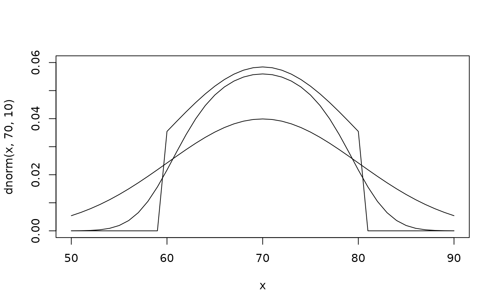

Truncated Normal and Uniform distributions, where the response is also subject to a Normally distributed measurement error.
Usage
dmenorm(
x,
mean = 0,
sd = 1,
lower = -Inf,
upper = Inf,
sderr = 0,
meanerr = 0,
log = FALSE
)
pmenorm(
q,
mean = 0,
sd = 1,
lower = -Inf,
upper = Inf,
sderr = 0,
meanerr = 0,
lower.tail = TRUE,
log.p = FALSE
)
qmenorm(
p,
mean = 0,
sd = 1,
lower = -Inf,
upper = Inf,
sderr = 0,
meanerr = 0,
lower.tail = TRUE,
log.p = FALSE
)
rmenorm(n, mean = 0, sd = 1, lower = -Inf, upper = Inf, sderr = 0, meanerr = 0)
dmeunif(x, lower = 0, upper = 1, sderr = 0, meanerr = 0, log = FALSE)
pmeunif(
q,
lower = 0,
upper = 1,
sderr = 0,
meanerr = 0,
lower.tail = TRUE,
log.p = FALSE
)
qmeunif(
p,
lower = 0,
upper = 1,
sderr = 0,
meanerr = 0,
lower.tail = TRUE,
log.p = FALSE
)
rmeunif(n, lower = 0, upper = 1, sderr = 0, meanerr = 0)Arguments
- x, q
vector of quantiles.
- mean
vector of means.
- sd
vector of standard deviations.
- lower
lower truncation point.
- upper
upper truncation point.
- sderr
Standard deviation of measurement error distribution.
- meanerr
Optional shift for the measurement error distribution.
- log, log.p
logical; if TRUE, probabilities \(p\) are given as \(\log(p)\), or log density is returned.
- lower.tail
logical; if TRUE (default), probabilities are \(P[X <= x]\), otherwise, \(P[X > x]\).
- p
vector of probabilities.
- n
number of observations. If
length(n) > 1, the length is taken to be the number required.
Value
dmenorm, dmeunif give the density, pmenorm,
pmeunif give the distribution function, qmenorm,
qmeunif give the quantile function, and rmenorm,
rmeunif generate random deviates, for the Normal and Uniform versions
respectively.
Details
The normal distribution with measurement error has density
$$ $$$$ \frac{\Phi(u, \mu_2, \sigma_3) - \Phi(l, \mu_2, }{(Phi(upper, mu2, sigma3) - Phi(lower, mu2, sigma3)) / (Phi(upper, mean, sd) - Phi(lower, mean, sd)) * phi(x, mean + meanerr, sigma2)}\deqn{ \sigma_3)}{\Phi(u, \mu_0, \sigma_0) - \Phi(l, \mu_0, \sigma_0)} $$$$ \phi(x, \mu_0 + \mu_\epsilon, \sigma_2) $$$$ $$ where $$\sigma_2^2 = \sigma_0^2 + \sigma_\epsilon^2,$$ $$\sigma_3 = \sigma_0 \sigma_\epsilon / \sigma_2,$$ $$\mu_2 = (x - \mu_\epsilon) \sigma_0^2 + \mu_0 $$$$ \sigma_\epsilon^2,$$
\(\mu_0\) is the mean of the original Normal distribution before
truncation,
\(\sigma_0\) is the corresponding standard deviation,
\(u\) is the upper truncation point,
\(l\) is the lower
truncation point,
\(\sigma_\epsilon\) is the standard deviation
of the additional measurement error,
\(\mu_\epsilon\) is the
mean of the measurement error (usually 0).
\(\phi(x)\) is the
density of the corresponding normal distribution, and
\(\Phi(x)\) is the distribution function of the corresponding
normal distribution.
The uniform distribution with measurement error has density
$$(\Phi(x, \mu_\epsilon+l, \sigma_\epsilon) - \Phi(x, \mu_\epsilon+u, \sigma_\epsilon)) $$$$ / (u - l)$$
These are calculated from the original truncated Normal or Uniform density functions \(f(. | \mu, \sigma, l, u)\) as
$$\int f(y $$$$ | \mu, \sigma, l, u) \phi(x, y $$$$ + \mu_\epsilon, \sigma_\epsilon) dy$$
If sderr and meanerr are not specified they assume the default
values of 0, representing no measurement error variance, and no constant
shift in the measurement error, respectively.
Therefore, for example with no other arguments, dmenorm(x), is simply
equivalent to dtnorm(x), which in turn is equivalent to
dnorm(x).
These distributions were used by Satten and Longini (1996) for CD4 cell counts conditionally on hidden Markov states of HIV infection, and later by Jackson and Sharples (2002) for FEV1 measurements conditionally on states of chronic lung transplant rejection.
These distribution functions are just provided for convenience, and are not
optimised for numerical accuracy or speed. To fit a hidden Markov model
with these response distributions, use a hmmMETNorm or
hmmMEUnif constructor. See the hmm-dists help
page for further details.
References
Satten, G.A. and Longini, I.M. Markov chains with measurement error: estimating the 'true' course of a marker of the progression of human immunodeficiency virus disease (with discussion) Applied Statistics 45(3): 275-309 (1996)
Jackson, C.H. and Sharples, L.D. Hidden Markov models for the onset and progression of bronchiolitis obliterans syndrome in lung transplant recipients Statistics in Medicine, 21(1): 113--128 (2002).
Author
C. H. Jackson chris.jackson@mrc-bsu.cam.ac.uk
Examples
## what does the distribution look like?
x <- seq(50, 90, by=1)
plot(x, dnorm(x, 70, 10), type="l", ylim=c(0,0.06)) ## standard Normal
lines(x, dtnorm(x, 70, 10, 60, 80), type="l") ## truncated Normal
## truncated Normal with small measurement error
lines(x, dmenorm(x, 70, 10, 60, 80, sderr=3), type="l")
